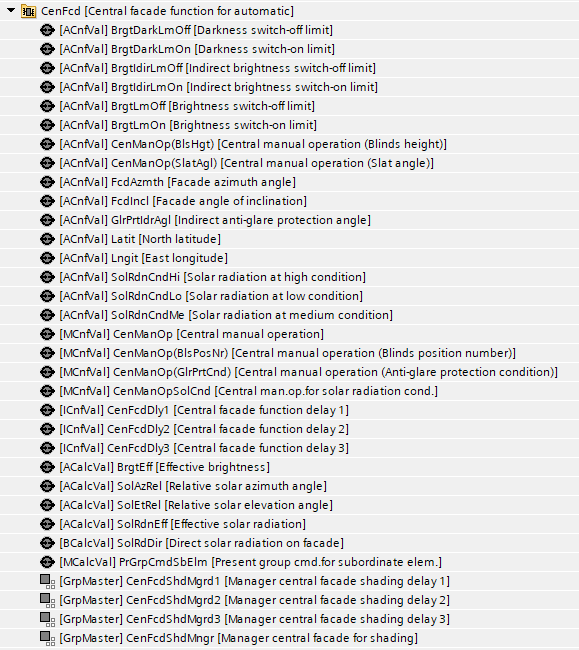
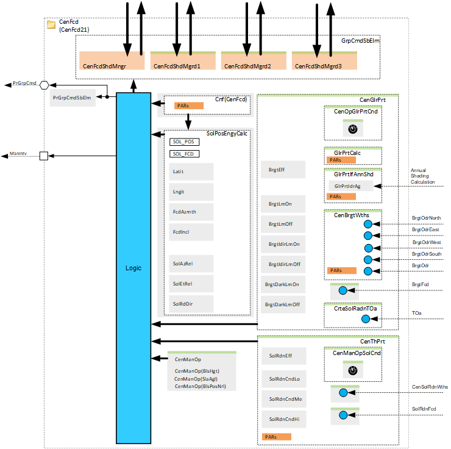
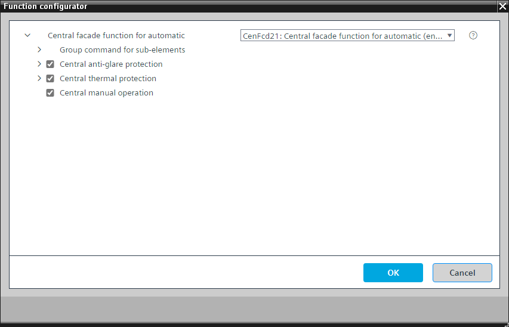
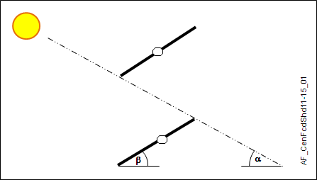
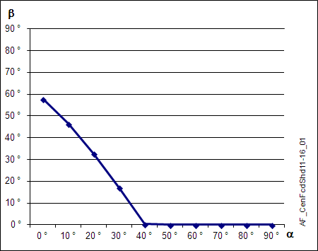
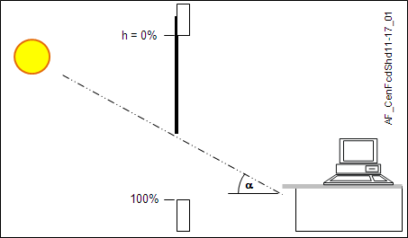
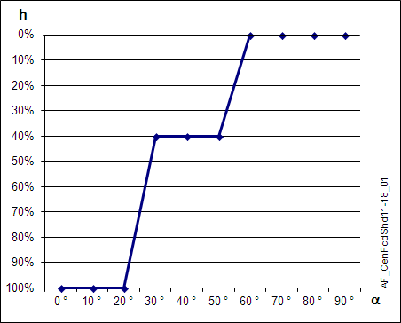
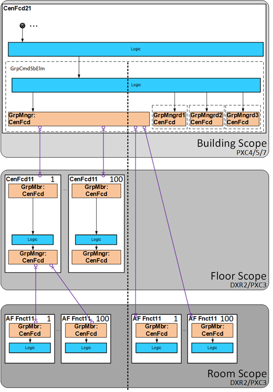
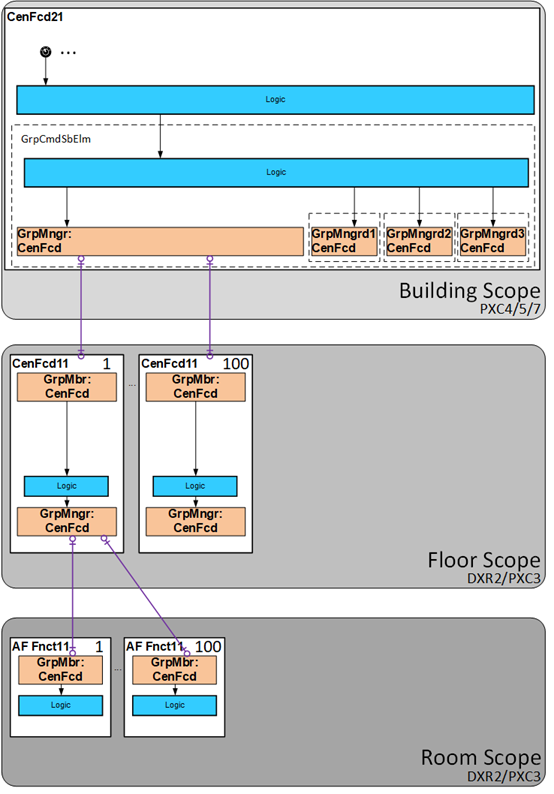
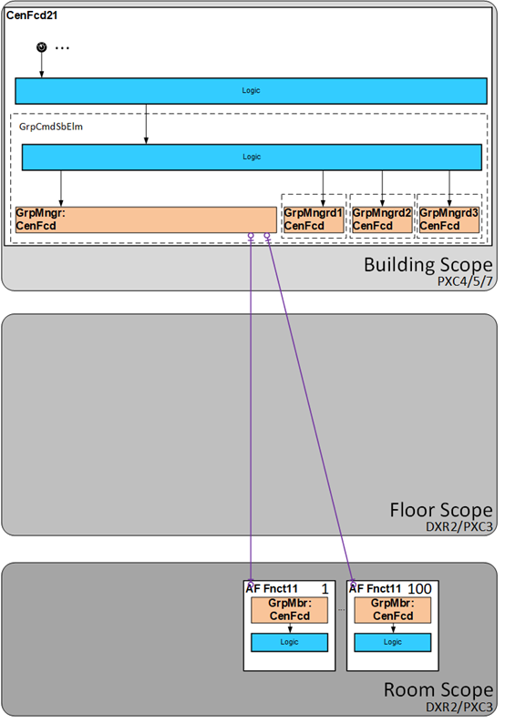

[CenFcd21] 自动中央门面功能
Program block, name / node subtype: [CenFcd21] Central facade function for automatic
Library hierarchy: Coordination
Family: CenFcd
项目树 | 图表 |
|---|---|
 |  |
Configurator


程序块存储在没有 I/Os. 的库中 使用auto-create and auto-connect函数创建 I/Os 和 /or 将它们连接到接口块，例如 R_A、CMD_B。或者，从包含库中预定义 I/Os 的文件夹中取出 I/Os，并从工厂中取出 /or，并将它们连接到接口块。
CenFcd21 管理立面段中用于自动功能的中央信息，并将其分发到从属应用程序功能 (AF) CenFcdShd11 或直接分发到相连的房间。
立面段的窗户具有相同的特征：
- azimuth and slope
- shading product
- sun, e.g., shadows from above
- shadows from the horizon and neighboring buildings
This is relevant if you do not use the option "Anti-glare protection calculation with interface for annual shading calculation".
姓名 | 描述 | 类型 | 报警/通知类 | 趋势/类型 | |
|---|---|---|---|---|---|
PrGrpCmdSbElm | Present group command for subordinate elements | MCalcVal: Multistate calculated value | N/A | 是的，4 | |
SolAzRel | Relative solar azimuth angle | ACalcVal: Analog calculated value | N/A | N/A | |
SolEtRel | Relative solar elevation angle | ACalcVal: Analog calculated value | N/A | N/A | |
SolRdDir | Direct solar radiation on facade | ACalcVal: Analog calculated value | N/A | N/A | |
Lngit | East longitude | ACnfVal: Analog configuration value | N/A | N/A | |
Latit | North latitude | ACnfVal: Analog configuration value | N/A | N/A | |
FcdIncl | Facade angle of inclination | ACnfVal: Analog configuration value | N/A | N/A | |
FcdAzmth | Facade azimuth angle | ACnfVal: Analog configuration value | N/A | N/A | |
CenFcdShdMngr | Manager central facade for shading | GrpMaster：组经理 | N/A | N/A | |
Solar angle
立面上的太阳角（Relative solar azimuth angle, Relative solar elevation angle) 根据地理位置、立面方向以及日期和时间计算得出。它决定了阳光是否照射到立面区域。
以下值作为 BACnet 对象提供用于监视：
- Relative solar azimuth angle (SolAzRel)
- Relative solar elevation angle (SolEtRel)
- Direct solar radiation on facade (SolRdDir)
或者，来自年度阴影计算机的信息可用于考虑建筑物和地平线的阴影。
More settings (Parameters in the chart "Configuration (Central facade function for automatic)")
范围 | 描述 | 默认值 |
|---|---|---|
BlsTypCnf | Configuration blinds type 1: Blinds, position number | 1: Blinds, position number |
SolAglLeft | Solar position angle range left -90...90 [°] | 85 [°] |
SolAglRight | Solar position angle range right -90...90 [°] | 85 [°] |
SolAglUp | Solar position angle range up -90...90 [°] | 85 [°] |
SolAglDwn | Solar position angle range down -90...90 [°] | 85 [°] |
SlatPosHrz | Slat position horizontal 理论板条与水平位置板条的百分比。 -200...200 [%] 百叶窗高度是百叶窗的总机械范围。 | 20 [%] |
SlatPosVrt | Slat position vertical 理论板条与垂直位置板条的百分比。 -200...200 [%] % 中的板条角度是百叶窗高度 100% 的总机械范围。 | 100 [%] |
HgtSolPosHi | Height for high solar position 0...100 [%] | 40 [%] |
HgtSolPosLo | Height for low solar position 0...100 [%] | 60 [%] |
SolEtOpn | Solar elevation for opening Height 0 % -90...90 [°] | 60 [°] |
DlyOffSolDirHi | Switch-off delay for direct solar radiation by high solar position 0...3600 [s] | 1200 [s] |
DlyOffSolDirLo | Switch-off delay for direct solar radiation by low solar position 0...3600 [s] | 60 [s] |
Limits to direct solar radiation
以下因素限制透过窗户的辐射：
- The wall thickness (angle range left and right). You can configure this using SolAglLeft and SolAglRight.
- The wall thickness above balconies. You can configure this with SolAglUp.
- The horizon. You can configure this with SolAglDwn.
Delay after direct solar radiation
当阳光停止照射在立面上时，眩光不会立即停止。眩光取决于太阳高度角和当地条件，例如反射、明亮的表面、圆形边缘。
您可以在函数中定义关闭延迟，该函数根据时间和立面方向计算该值：
- DlyOffSolDirHi (at vertical solar radiation)
- DlyOffSolDirLo (at horizontal solar radiation)
Blinds type (strategy)
您可以配置百叶窗类型及其响应。
战略 | 描述 |
|---|---|
1 | 百叶窗，位置编号（P 位置） 控制百叶窗有 4 个不同的板条位置（P 位置）。它定义了降低位置的板条角度（高度 100 %）。 位置必须在执行器中预先定义。它们不需要特别设置。此策略适用于几乎所有标准百叶窗。 |
2 | 百叶窗，角度 仅当执行器不支持位置编号时才使用该策略。通过高度（始终为 100 %）和相应的板条角度进行控制。 |
3 | 百叶窗、高度和角度 百叶窗根据阳光的高度和板条角度进行调整。该策略适用于特殊应用，例如从下到上移动的百叶窗。 这需要针对对象进行详细的规划。 |
4 | 遮阳篷，高度（阴影边缘） 遮阳篷的高度根据太阳位置进行控制，以便阴影边缘始终位于房间的同一位置。 这需要针对对象进行详细的规划。 |
Strategy 1: P-position
投影太阳角 | 板条角度 | P位 |
|---|---|---|
0°...10° | 60° | P1: Visual protection |
10°...25° | 45° | P2: Anti-glare, sun position low |
25°...40° | 25° | P3: Anti-glare, sun position high |
40°...90° | 0° | P4: Open |
Strategy 2 and 3: Slats angle as function of project solar elevation


Strategy 3 and 4: Height position as a function of relative solar elevation


这些值是示例。您可以针对各个房间布局进行如下配置。现场测量作为基础。
太阳高度角 | 高度 |
|---|---|
0...30 [°] | 100 [%]（关闭） |
30...50 [°] | HgtSolPosLo（默认 60 %） |
50...SolEtOpn[°]（默认 60°） | HgtSolPosHi（默认 40 %） |
SolEtOpn...90 [°]（默认 60°） | 0 [%]（开路） |
该函数每天最多计算 8 次新值。这提供了坚实的防眩光效果，而不会因执行器的频繁移动而干扰用户。
描述 |
|---|
Group command for sub-elements delay 1 属于该选项的元素： Central operating mode delay 1 | ICnfVal: Integer configuration value 经理中央立面遮阳延迟1 | GrpMaster：组经理 |
Group command for sub-elements delay 2 属于该选项的元素： Central operating mode delay 2 | ICnfVal: Integer configuration value 经理中央立面遮阳延迟2 | GrpMaster：组经理 |
Group command for sub-elements delay 3 属于该选项的元素： Central operating mode delay 3 | ICnfVal: Integer configuration value 经理中央立面遮阳延迟3 | GrpMaster：组经理 |
Central manual operation 属于该选项的元素： Central manual operation | MCnfVal: Multistate configuration value Central manual operation (Blinds height) | ACnfVal: Analog configuration value Central manual operation (Slat angle) | ACnfVal: Analog configuration value Central manual operation (Blinds position number) | MCnfVal: Multistate configuration value |
Central anti-glare protection 属于该选项的元素： Effective brightness | ACalcVal: Analog calculated value Brightness switch-on limit | ACnfVal: Analog configuration value Brightness switch-off limit | ACnfVal: Analog configuration value Indirect brightness switch-on limit | ACnfVal: Analog configuration value Indirect brightness switch-off limit | ACnfVal: Analog configuration value Darkness switch-on limit | ACnfVal: Analog configuration value Darkness switch-off limit | ACnfVal: Analog configuration value |
Central thermal protection 属于该选项的元素： Effective solar radiation | ACalcVal: Analog calculated value Solar radiation at high condition | ACnfVal: Analog configuration value Solar radiation at medium condition | ACnfVal: Analog configuration value Solar radiation at low condition | ACnfVal: Analog configuration value |
More details about the option "Central anti-glare protection"
Further options
描述 |
|---|
Central manual operation for anti-glare protection condition 属于该选项的元素： Central manual operation (Anti-glare protection condition) | MCnfVal: Multistate configuration value |
Anti-glare protection calculation |
Anti-glare protection calculation with interface for annual shading calculation 属于该选项的元素： Indirect anti-glare protection angle | ACnfVal: Analog configuration value |
Central brightness from weather station |
立面的中央亮度 |
Additional criterion based on solar radiation and outside temperature |
使用“Anti-glare protection calculation“ 或者 ”Anti-glare protection calculation with interface for annual shading calculation"
使用“Central brightness from weather station”或“立面中央亮度”。
Parameters in "Anti-glare protection calculation"
姓名 | 默认值 |
|---|---|
启用间接角度 | 0 |
间接角 | 90° |
Maximum light sensitivity delay(at ADA_DLY) | 1 h |
Minimum light sensitivity delay(at ADA_DLY) | 15 min |
Switch-on delay brightness | 1 min |
Parameters in "Anti-glare protection calculation with interface for annual shading calculation"
姓名 | 默认值 |
|---|---|
Maximum light sensitivity delay(at ADA_DLY) | 1 h |
Minimum light sensitivity delay(at ADA_DLY) | 15 min |
Switch-on delay brightness | 1 min |
Parameters in "Central brightness from weather station"
姓名 | 默认值 |
|---|---|
Angle correction | 0° |
用于计算的最少传感器数量 | 3 |
Switch-on delay brightness | 减少系数 |
More details about the option "Central thermal protection"
Optional elements
姓名 | 描述 | 类型 | 报警/通知类 | 趋势/类型 | |
|---|---|---|---|---|---|
CenManOpSolCnd | Central manual operation for solar radiation condition | MCnfVal: Multistate configuration value | N/A | N/A | |
Further options
描述 |
|---|
Central solar radiation from weather station |
外立面的太阳辐射 |
使用“Central solar radiation from weather station”或“来自立面的太阳辐射”。
Parameters in "Central thermal protection"
姓名 | 默认值 |
|---|---|
Solar radiation switch-on delay | 20 min |
Solar radiation switch-off delay | 20 min |
Delayed operation
另有三名集团经理延迟运营。目标是将房间分配给更多的组经理，并确保并非所有房间同时改变其运行模式。
CenFcd21 是构建范围的一部分，可以通过两种方式使用：
- For commanding of subordinate central functions in the floor scope
- For commanding of subordinate room controllers in the room scope
下图概述了这两种方法。

两种选择不太可能同时存在。有两种可能的拓扑：
中央功能的级联是必要的。 | 中央功能的级联是不必要的。 |
 |  |